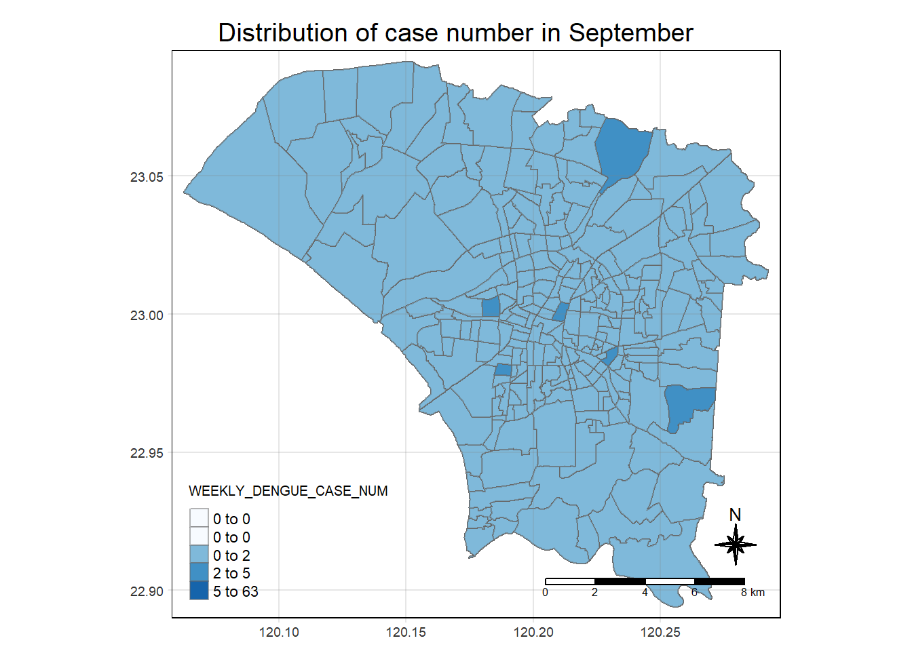
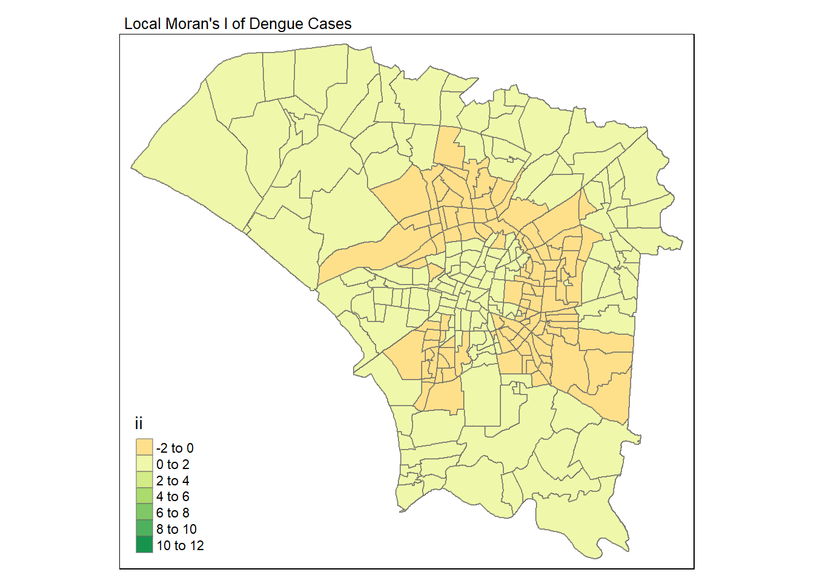
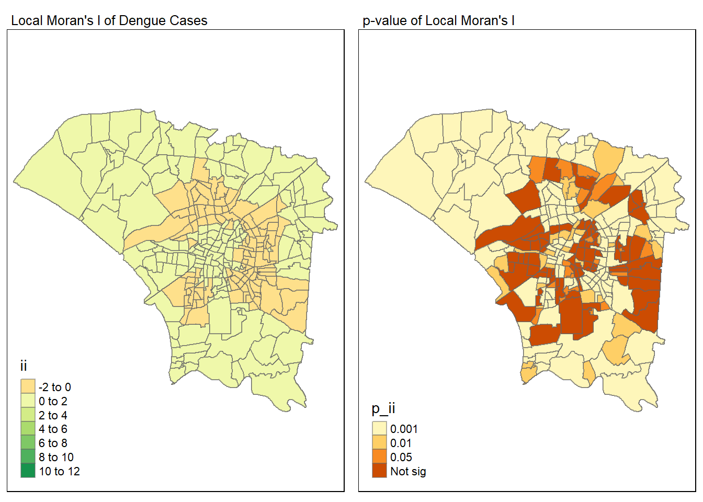
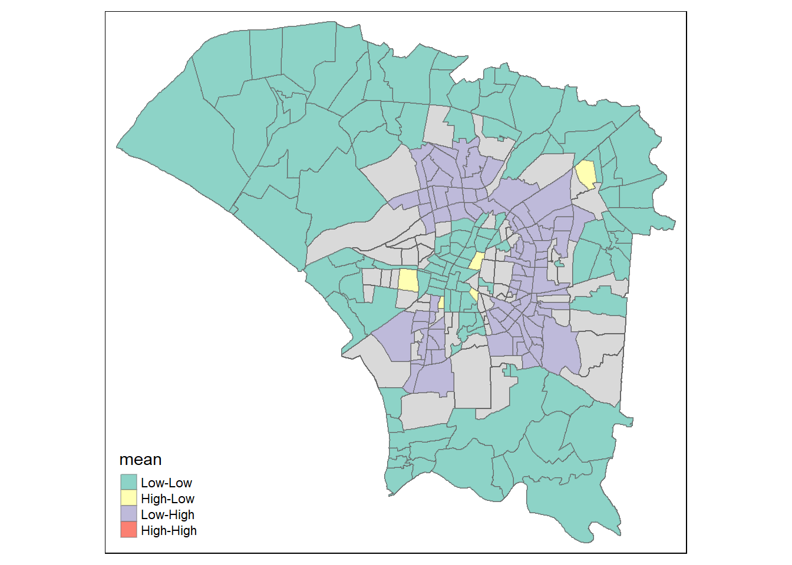
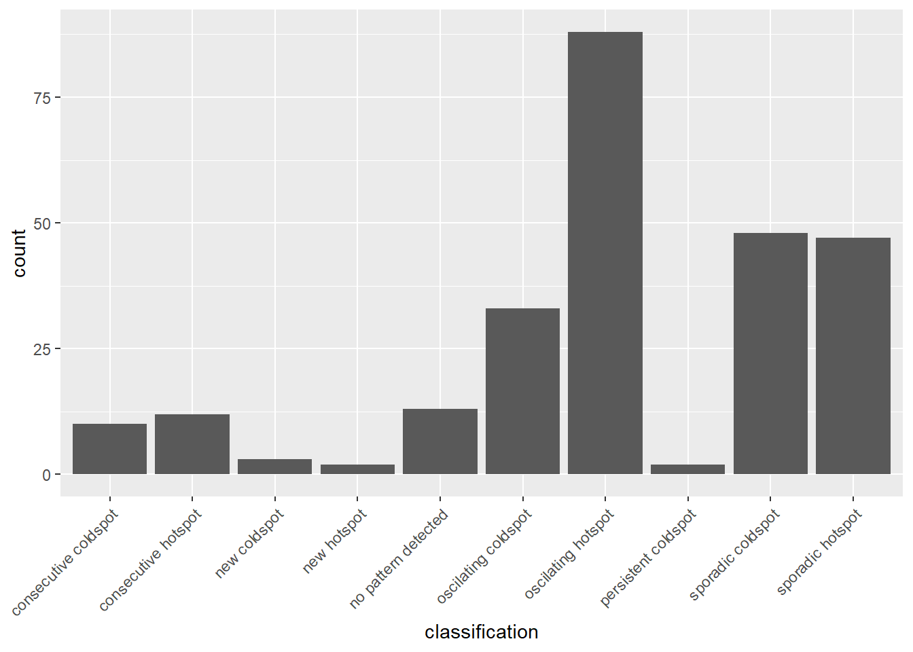
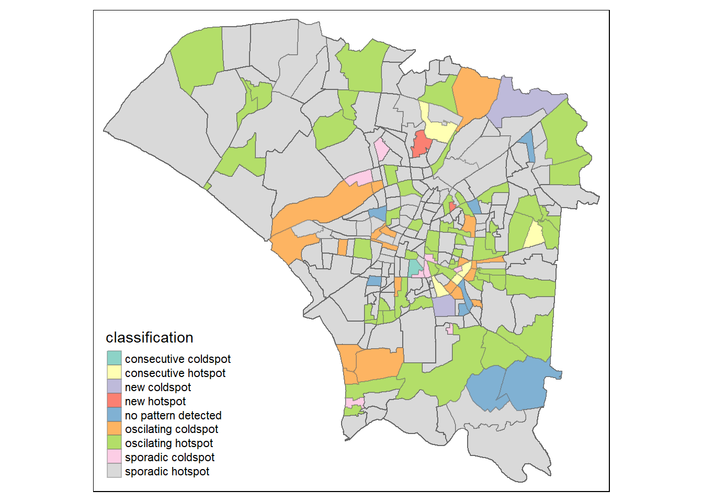

Show the code
pacman::p_load(sf, sfdep, tmap, tidyverse, lubridate, plotly)In 2023, Taiwan recorded the worst outbreak of dengue fever since 2015. The outbreak mostly centered in Tainan, prompting escalated rates of inspections in high-risk areas and buildings.
The general criteria to label an area high-risk would be a place that has poor gutter structural design, blockages in the drain or are largely abandoned. Such issues increase the chance of water remaining stagnant and facilitates the continued reproduction of mosquitoes, the vector through which dengue fever is perpetuated.
While this criteria is well-founded, it is possible to improve the identification of high-risk areas to enable more efficient use of resources through more precise targeting.
To do so, we will need to
Identify if the distribution of dengue fever outbreak in Tainan City, Taiwan is independent spatially or spatio-temporally and if so,
Identify the present hot and cold areas, as well as emergent ones
I will be investigating the spatial autocorrelation of dengue fever in Tainan City, on both a local and global level. The global autocorrelation tells us if there are signs of clustering for the entirety of the dataset. Local autocorrelation further shows us the relationship of the clustering in a given area to its neighbours (e.g. if a hotspot is surrounded by coldspots and vice-versa).
This project also encompasses an analysis of the spatio-temporal autocorrelation of dengue, which allows us to identify any emergent hotspots in the dataset.
For this project, the analysis will be limited to Tainan City, the epicentre of dengue in Taiwan, specifically the following counties in Tainan City:
D01
D02
D04
D06
D07
D08
D32
D39
The analysis will be limited to the specific timeframe where dengue cases spiked in 2023, which were epidemiological weeks 31-50.
After performing all of the analysis, I will discuss the outcome of the results.
I will be using the following data sets (provided by the professor):
TAIWAN_VILLAGE_2020, a geospatial data of village boundary of Taiwan. It is in ESRI shapefile format. The data is in Taiwan Geographic Coordinate System. (Source: Historical map data of the village boundary: TWD97 longitude and latitude)
Dengue_Daily.csv, an aspatial data of reported dengue cases in Taiwan since 1998. (Source: Dengue Daily Confirmed Cases Since 1998. Below are selected fields that are useful for this study:
發病日: Onset date
最小統計區中心點X: X-coordinate
最小統計區中心點Y: Y-coordinate
居住縣市: County name
居住村里: Village name
居住鄉鎮: Town name
We will be using the following R packages for this exercise:
sf: Package for handing spatial data
sfdep: Package for testing the space-time autocorrelation of data
tmap: Package to generate thematic maps
tidyverse: Collection of packages for data science. This collection includes tidyr, ggplot2 and dplyr, among others
lubridate: Package to handle dates and times
plotly: Package to create interactive maps in R.
pacman::p_load(sf, sfdep, tmap, tidyverse, lubridate, plotly)I will be importing the tainan_vil data into my R environment using st_read() of the sf package.
tainan_vil <- st_read(dsn = "data/geospatial",
layer="TAINAN_VILLAGE")Reading layer `TAINAN_VILLAGE' from data source
`D:\KrisLBT\IS415-GAA\Take_Home_Exercises\Take_Home_Exercise_2\data\geospatial'
using driver `ESRI Shapefile'
Simple feature collection with 649 features and 10 fields
Geometry type: POLYGON
Dimension: XY
Bounding box: xmin: 120.0269 ymin: 22.88751 xmax: 120.6563 ymax: 23.41374
Geodetic CRS: TWD97Now, I will be importing the daily dengue data into my R environment using the read_csv() function of the sf package.
dengue <- read_csv("data/aspatial/Dengue_Daily.csv")For my own convenience, I decided to translate the columns in dengue from Traditional Chinese to English and also try to link them up the columns in counties_sf. The following code chunk was written to perform it:
dengue <- dengue %>%
rename('X-Coordinate' = 最小統計區中心點X,
'Y-Coordinate' = 最小統計區中心點Y,
'COUNTYNAME' = 居住縣市,
'VILLNAME' = 居住村里,
'TOWNNAME' = 居住鄉鎮)We will be restricting tainan_vil to the counties mentioned above.
#getting the districts of interest
districts = c("D01","D02","D04","D06","D07","D08","D32","D39")
#restricting the village into just the required districts
districts_sf = tainan_vil[tainan_vil$TOWNID %in% districts, ]However, we also face the problem of repeated village names in different towns. To fix this, we can specify the village name with the town name:
districts_sf <- unite(districts_sf, VILLNAME, TOWNNAME, VILLNAME, sep = "-")We are also only interested in the dengue cases between weeks 31-50 in 2023. We can further restrict it using the following code chunk:
# get the ones from 2023
dengue$epiweek <- epiweek(dengue$發病日)
dengue$epiyear <- epiyear(dengue$發病日)
dengue <- dengue[dengue$epiyear==2023,]
# get only from weeks 31-50
dengue <- dengue[dengue$epiweek>=31 & dengue$epiweek<=50,]I also wanted to let the VILLNAME in dengue follow the same format as the VILLNAME in tainan_vil.
dengue <- unite(dengue, VILLNAME, TOWNNAME, VILLNAME, sep = "-")We can use the summary() function to investigate the contents of dengue
summary(dengue) 發病日 個案研判日 通報日
Min. :2023-07-30 Length:25475 Min. :2023-07-30
1st Qu.:2023-09-11 Class :character 1st Qu.:2023-09-13
Median :2023-10-01 Mode :character Median :2023-10-03
Mean :2023-10-03 Mean :2023-10-05
3rd Qu.:2023-10-25 3rd Qu.:2023-10-27
Max. :2023-12-16 Max. :2023-12-23
性別 年齡層 COUNTYNAME VILLNAME
Length:25475 Length:25475 Length:25475 Length:25475
Class :character Class :character Class :character Class :character
Mode :character Mode :character Mode :character Mode :character
最小統計區 X-Coordinate Y-Coordinate 一級統計區
Length:25475 Length:25475 Length:25475 Length:25475
Class :character Class :character Class :character Class :character
Mode :character Mode :character Mode :character Mode :character
二級統計區 感染縣市 感染鄉鎮 感染村里
Length:25475 Length:25475 Length:25475 Length:25475
Class :character Class :character Class :character Class :character
Mode :character Mode :character Mode :character Mode :character
是否境外移入 感染國家 確定病例數 居住村里代碼
Length:25475 Length:25475 Min. :1 Length:25475
Class :character Class :character 1st Qu.:1 Class :character
Mode :character Mode :character Median :1 Mode :character
Mean :1
3rd Qu.:1
Max. :1
感染村里代碼 血清型 內政部居住縣市代碼 內政部居住鄉鎮代碼
Length:25475 Length:25475 Length:25475 Length:25475
Class :character Class :character Class :character Class :character
Mode :character Mode :character Mode :character Mode :character
內政部感染縣市代碼 內政部感染鄉鎮代碼 epiweek epiyear
Length:25475 Length:25475 Min. :31.00 Min. :2023
Class :character Class :character 1st Qu.:37.00 1st Qu.:2023
Mode :character Mode :character Median :40.00 Median :2023
Mean :39.96 Mean :2023
3rd Qu.:43.00 3rd Qu.:2023
Max. :50.00 Max. :2023 Looking through the dataframe, I noticed that there are some “None” values in the X- and Y-coordinates. I will remove them using the following:
# removing rows with None values in X-Coordinates and Y-Coordinates
# note that X- and Y-Coordinates are both in character form and not numerical form
dengue <- subset(dengue, `X-Coordinate` != "None" &
`Y-Coordinate` != "None" &
VILLNAME %in% districts_sf$VILLNAME)
# assess if any None values remain
sum(dengue$`X-Coordinate` == "None")[1] 0Finally, I will be converting dengue into an sf object.
# Create sf object after handling missing values
dengue_sf <- st_as_sf(dengue, coords = c("X-Coordinate", "Y-Coordinate"), crs = st_crs(districts_sf))Since the dengue cases is for the whole of Tainan Village and not just the districts, we will need to take only the cases that happened within the districts of interest. Morever, we need to retain crucial information such as the epidemiological week that the case occurred in, the village and number of cases per week.
Before that, we can get the total number of cases per week per village in a given town.
dengueCounty <- dengue %>%
group_by(VILLNAME, epiweek) %>%
summarise(WEEKLY_DENGUE_CASE_NUM=n()) %>%
filter(VILLNAME != "None") %>%
st_drop_geometry()However, doing this will drop weeks that have 0 cases. We can fix this using the following code chunk:
# generate all combinations of VILLNAME from districts_sf and weeks from 31 to 50
all_combinations <- expand_grid(VILLNAME = unique(districts_sf$VILLNAME),
epiweek = 31:50)
# left join with dengueCounty to retain existing records
dengueCountyComplete <- left_join(all_combinations, dengueCounty, by = c("VILLNAME", "epiweek"))
# replace missing sums with 0
dengueCountyComplete <- mutate(dengueCountyComplete, WEEKLY_DENGUE_CASE_NUM = if_else(is.na(WEEKLY_DENGUE_CASE_NUM), 0, WEEKLY_DENGUE_CASE_NUM))Now, I will analyse the global and local measures of spatial autocorrelation. This will allow us to answer the following questions:
There are many ways to perform this. In this exercise, I will be using the Moran’s I for both.
Before we conduct this analysis, we will need to prepare the data.
I will be joining districts_sf with dengueCountyComplete so we can analyse the global and local spatial autocorrelation.
tainan_dengue <- left_join(districts_sf, dengueCountyComplete)We can visualise the distribution using a choropleth map:
tmap_mode("plot")
tm_shape(tainan_dengue) +
tm_fill("WEEKLY_DENGUE_CASE_NUM",
style = "quantile",
palette = "Blues",
title = "WEEKLY_DENGUE_CASE_NUM") +
tm_layout(main.title = "Distribution of case number",
main.title.position = "center",
main.title.size = 1.2,
legend.height = 0.45,
legend.width = 0.35,
frame = TRUE) +
tm_borders(alpha = 0.5) +
tm_compass(type="8star", size = 2) +
tm_scale_bar() +
tm_grid(alpha =0.2)
We can also visualise this data according to month. For this, I will be using the month of September:
sept <- tainan_dengue %>%
filter(epiweek>35 & epiweek<40)
tmap_mode("plot")
tm_shape(tainan_dengue) +
tm_fill("WEEKLY_DENGUE_CASE_NUM",
style = "quantile",
palette = "Blues",
title = "WEEKLY_DENGUE_CASE_NUM") +
tm_layout(main.title = "Distribution of case number in September",
main.title.position = "center",
main.title.size = 1.2,
legend.height = 0.45,
legend.width = 0.35,
frame = TRUE) +
tm_borders(alpha = 0.5) +
tm_compass(type="8star", size = 2) +
tm_scale_bar() +
tm_grid(alpha =0.2)
We notice that from the quantiles that it is very positively skewed. As such, this suggests that there could be some clustering for the dengue cases.
We will now derive the contiguity weights using the Queen’s method.
wm_q <- tainan_dengue %>%
mutate(nb = st_contiguity(geometry),
wt = st_weights(nb,
style = "W"),
.before = 1) We can get a basic overview of wm_q using the following code chunk:
wm_qSimple feature collection with 5160 features and 13 fields
Geometry type: POLYGON
Dimension: XY
Bounding box: xmin: 120.0627 ymin: 22.89401 xmax: 120.2925 ymax: 23.09144
Geodetic CRS: TWD97
First 10 features:
nb
1 2, 3, 4, 5, 6, 7, 8, 9, 10, 11, 12, 13, 14, 15, 16, 17, 18, 19, 20, 101, 102, 103, 104, 105, 106, 107, 108, 109, 110, 111, 112, 113, 114, 115, 116, 117, 118, 119, 120, 2341, 2342, 2343, 2344, 2345, 2346, 2347, 2348, 2349, 2350, 2351, 2352, 2353, 2354, 2355, 2356, 2357, 2358, 2359, 2360, 3181, 3182, 3183, 3184, 3185, 3186, 3187, 3188, 3189, 3190, 3191, 3192, 3193, 3194, 3195, 3196, 3197, 3198, 3199, 3200
2 1, 3, 4, 5, 6, 7, 8, 9, 10, 11, 12, 13, 14, 15, 16, 17, 18, 19, 20, 101, 102, 103, 104, 105, 106, 107, 108, 109, 110, 111, 112, 113, 114, 115, 116, 117, 118, 119, 120, 2341, 2342, 2343, 2344, 2345, 2346, 2347, 2348, 2349, 2350, 2351, 2352, 2353, 2354, 2355, 2356, 2357, 2358, 2359, 2360, 3181, 3182, 3183, 3184, 3185, 3186, 3187, 3188, 3189, 3190, 3191, 3192, 3193, 3194, 3195, 3196, 3197, 3198, 3199, 3200
3 1, 2, 4, 5, 6, 7, 8, 9, 10, 11, 12, 13, 14, 15, 16, 17, 18, 19, 20, 101, 102, 103, 104, 105, 106, 107, 108, 109, 110, 111, 112, 113, 114, 115, 116, 117, 118, 119, 120, 2341, 2342, 2343, 2344, 2345, 2346, 2347, 2348, 2349, 2350, 2351, 2352, 2353, 2354, 2355, 2356, 2357, 2358, 2359, 2360, 3181, 3182, 3183, 3184, 3185, 3186, 3187, 3188, 3189, 3190, 3191, 3192, 3193, 3194, 3195, 3196, 3197, 3198, 3199, 3200
4 1, 2, 3, 5, 6, 7, 8, 9, 10, 11, 12, 13, 14, 15, 16, 17, 18, 19, 20, 101, 102, 103, 104, 105, 106, 107, 108, 109, 110, 111, 112, 113, 114, 115, 116, 117, 118, 119, 120, 2341, 2342, 2343, 2344, 2345, 2346, 2347, 2348, 2349, 2350, 2351, 2352, 2353, 2354, 2355, 2356, 2357, 2358, 2359, 2360, 3181, 3182, 3183, 3184, 3185, 3186, 3187, 3188, 3189, 3190, 3191, 3192, 3193, 3194, 3195, 3196, 3197, 3198, 3199, 3200
5 1, 2, 3, 4, 6, 7, 8, 9, 10, 11, 12, 13, 14, 15, 16, 17, 18, 19, 20, 101, 102, 103, 104, 105, 106, 107, 108, 109, 110, 111, 112, 113, 114, 115, 116, 117, 118, 119, 120, 2341, 2342, 2343, 2344, 2345, 2346, 2347, 2348, 2349, 2350, 2351, 2352, 2353, 2354, 2355, 2356, 2357, 2358, 2359, 2360, 3181, 3182, 3183, 3184, 3185, 3186, 3187, 3188, 3189, 3190, 3191, 3192, 3193, 3194, 3195, 3196, 3197, 3198, 3199, 3200
6 1, 2, 3, 4, 5, 7, 8, 9, 10, 11, 12, 13, 14, 15, 16, 17, 18, 19, 20, 101, 102, 103, 104, 105, 106, 107, 108, 109, 110, 111, 112, 113, 114, 115, 116, 117, 118, 119, 120, 2341, 2342, 2343, 2344, 2345, 2346, 2347, 2348, 2349, 2350, 2351, 2352, 2353, 2354, 2355, 2356, 2357, 2358, 2359, 2360, 3181, 3182, 3183, 3184, 3185, 3186, 3187, 3188, 3189, 3190, 3191, 3192, 3193, 3194, 3195, 3196, 3197, 3198, 3199, 3200
7 1, 2, 3, 4, 5, 6, 8, 9, 10, 11, 12, 13, 14, 15, 16, 17, 18, 19, 20, 101, 102, 103, 104, 105, 106, 107, 108, 109, 110, 111, 112, 113, 114, 115, 116, 117, 118, 119, 120, 2341, 2342, 2343, 2344, 2345, 2346, 2347, 2348, 2349, 2350, 2351, 2352, 2353, 2354, 2355, 2356, 2357, 2358, 2359, 2360, 3181, 3182, 3183, 3184, 3185, 3186, 3187, 3188, 3189, 3190, 3191, 3192, 3193, 3194, 3195, 3196, 3197, 3198, 3199, 3200
8 1, 2, 3, 4, 5, 6, 7, 9, 10, 11, 12, 13, 14, 15, 16, 17, 18, 19, 20, 101, 102, 103, 104, 105, 106, 107, 108, 109, 110, 111, 112, 113, 114, 115, 116, 117, 118, 119, 120, 2341, 2342, 2343, 2344, 2345, 2346, 2347, 2348, 2349, 2350, 2351, 2352, 2353, 2354, 2355, 2356, 2357, 2358, 2359, 2360, 3181, 3182, 3183, 3184, 3185, 3186, 3187, 3188, 3189, 3190, 3191, 3192, 3193, 3194, 3195, 3196, 3197, 3198, 3199, 3200
9 1, 2, 3, 4, 5, 6, 7, 8, 10, 11, 12, 13, 14, 15, 16, 17, 18, 19, 20, 101, 102, 103, 104, 105, 106, 107, 108, 109, 110, 111, 112, 113, 114, 115, 116, 117, 118, 119, 120, 2341, 2342, 2343, 2344, 2345, 2346, 2347, 2348, 2349, 2350, 2351, 2352, 2353, 2354, 2355, 2356, 2357, 2358, 2359, 2360, 3181, 3182, 3183, 3184, 3185, 3186, 3187, 3188, 3189, 3190, 3191, 3192, 3193, 3194, 3195, 3196, 3197, 3198, 3199, 3200
10 1, 2, 3, 4, 5, 6, 7, 8, 9, 11, 12, 13, 14, 15, 16, 17, 18, 19, 20, 101, 102, 103, 104, 105, 106, 107, 108, 109, 110, 111, 112, 113, 114, 115, 116, 117, 118, 119, 120, 2341, 2342, 2343, 2344, 2345, 2346, 2347, 2348, 2349, 2350, 2351, 2352, 2353, 2354, 2355, 2356, 2357, 2358, 2359, 2360, 3181, 3182, 3183, 3184, 3185, 3186, 3187, 3188, 3189, 3190, 3191, 3192, 3193, 3194, 3195, 3196, 3197, 3198, 3199, 3200
wt
1 0.01265823, 0.01265823, 0.01265823, 0.01265823, 0.01265823, 0.01265823, 0.01265823, 0.01265823, 0.01265823, 0.01265823, 0.01265823, 0.01265823, 0.01265823, 0.01265823, 0.01265823, 0.01265823, 0.01265823, 0.01265823, 0.01265823, 0.01265823, 0.01265823, 0.01265823, 0.01265823, 0.01265823, 0.01265823, 0.01265823, 0.01265823, 0.01265823, 0.01265823, 0.01265823, 0.01265823, 0.01265823, 0.01265823, 0.01265823, 0.01265823, 0.01265823, 0.01265823, 0.01265823, 0.01265823, 0.01265823, 0.01265823, 0.01265823, 0.01265823, 0.01265823, 0.01265823, 0.01265823, 0.01265823, 0.01265823, 0.01265823, 0.01265823, 0.01265823, 0.01265823, 0.01265823, 0.01265823, 0.01265823, 0.01265823, 0.01265823, 0.01265823, 0.01265823, 0.01265823, 0.01265823, 0.01265823, 0.01265823, 0.01265823, 0.01265823, 0.01265823, 0.01265823, 0.01265823, 0.01265823, 0.01265823, 0.01265823, 0.01265823, 0.01265823, 0.01265823, 0.01265823, 0.01265823, 0.01265823, 0.01265823, 0.01265823
2 0.01265823, 0.01265823, 0.01265823, 0.01265823, 0.01265823, 0.01265823, 0.01265823, 0.01265823, 0.01265823, 0.01265823, 0.01265823, 0.01265823, 0.01265823, 0.01265823, 0.01265823, 0.01265823, 0.01265823, 0.01265823, 0.01265823, 0.01265823, 0.01265823, 0.01265823, 0.01265823, 0.01265823, 0.01265823, 0.01265823, 0.01265823, 0.01265823, 0.01265823, 0.01265823, 0.01265823, 0.01265823, 0.01265823, 0.01265823, 0.01265823, 0.01265823, 0.01265823, 0.01265823, 0.01265823, 0.01265823, 0.01265823, 0.01265823, 0.01265823, 0.01265823, 0.01265823, 0.01265823, 0.01265823, 0.01265823, 0.01265823, 0.01265823, 0.01265823, 0.01265823, 0.01265823, 0.01265823, 0.01265823, 0.01265823, 0.01265823, 0.01265823, 0.01265823, 0.01265823, 0.01265823, 0.01265823, 0.01265823, 0.01265823, 0.01265823, 0.01265823, 0.01265823, 0.01265823, 0.01265823, 0.01265823, 0.01265823, 0.01265823, 0.01265823, 0.01265823, 0.01265823, 0.01265823, 0.01265823, 0.01265823, 0.01265823
3 0.01265823, 0.01265823, 0.01265823, 0.01265823, 0.01265823, 0.01265823, 0.01265823, 0.01265823, 0.01265823, 0.01265823, 0.01265823, 0.01265823, 0.01265823, 0.01265823, 0.01265823, 0.01265823, 0.01265823, 0.01265823, 0.01265823, 0.01265823, 0.01265823, 0.01265823, 0.01265823, 0.01265823, 0.01265823, 0.01265823, 0.01265823, 0.01265823, 0.01265823, 0.01265823, 0.01265823, 0.01265823, 0.01265823, 0.01265823, 0.01265823, 0.01265823, 0.01265823, 0.01265823, 0.01265823, 0.01265823, 0.01265823, 0.01265823, 0.01265823, 0.01265823, 0.01265823, 0.01265823, 0.01265823, 0.01265823, 0.01265823, 0.01265823, 0.01265823, 0.01265823, 0.01265823, 0.01265823, 0.01265823, 0.01265823, 0.01265823, 0.01265823, 0.01265823, 0.01265823, 0.01265823, 0.01265823, 0.01265823, 0.01265823, 0.01265823, 0.01265823, 0.01265823, 0.01265823, 0.01265823, 0.01265823, 0.01265823, 0.01265823, 0.01265823, 0.01265823, 0.01265823, 0.01265823, 0.01265823, 0.01265823, 0.01265823
4 0.01265823, 0.01265823, 0.01265823, 0.01265823, 0.01265823, 0.01265823, 0.01265823, 0.01265823, 0.01265823, 0.01265823, 0.01265823, 0.01265823, 0.01265823, 0.01265823, 0.01265823, 0.01265823, 0.01265823, 0.01265823, 0.01265823, 0.01265823, 0.01265823, 0.01265823, 0.01265823, 0.01265823, 0.01265823, 0.01265823, 0.01265823, 0.01265823, 0.01265823, 0.01265823, 0.01265823, 0.01265823, 0.01265823, 0.01265823, 0.01265823, 0.01265823, 0.01265823, 0.01265823, 0.01265823, 0.01265823, 0.01265823, 0.01265823, 0.01265823, 0.01265823, 0.01265823, 0.01265823, 0.01265823, 0.01265823, 0.01265823, 0.01265823, 0.01265823, 0.01265823, 0.01265823, 0.01265823, 0.01265823, 0.01265823, 0.01265823, 0.01265823, 0.01265823, 0.01265823, 0.01265823, 0.01265823, 0.01265823, 0.01265823, 0.01265823, 0.01265823, 0.01265823, 0.01265823, 0.01265823, 0.01265823, 0.01265823, 0.01265823, 0.01265823, 0.01265823, 0.01265823, 0.01265823, 0.01265823, 0.01265823, 0.01265823
5 0.01265823, 0.01265823, 0.01265823, 0.01265823, 0.01265823, 0.01265823, 0.01265823, 0.01265823, 0.01265823, 0.01265823, 0.01265823, 0.01265823, 0.01265823, 0.01265823, 0.01265823, 0.01265823, 0.01265823, 0.01265823, 0.01265823, 0.01265823, 0.01265823, 0.01265823, 0.01265823, 0.01265823, 0.01265823, 0.01265823, 0.01265823, 0.01265823, 0.01265823, 0.01265823, 0.01265823, 0.01265823, 0.01265823, 0.01265823, 0.01265823, 0.01265823, 0.01265823, 0.01265823, 0.01265823, 0.01265823, 0.01265823, 0.01265823, 0.01265823, 0.01265823, 0.01265823, 0.01265823, 0.01265823, 0.01265823, 0.01265823, 0.01265823, 0.01265823, 0.01265823, 0.01265823, 0.01265823, 0.01265823, 0.01265823, 0.01265823, 0.01265823, 0.01265823, 0.01265823, 0.01265823, 0.01265823, 0.01265823, 0.01265823, 0.01265823, 0.01265823, 0.01265823, 0.01265823, 0.01265823, 0.01265823, 0.01265823, 0.01265823, 0.01265823, 0.01265823, 0.01265823, 0.01265823, 0.01265823, 0.01265823, 0.01265823
6 0.01265823, 0.01265823, 0.01265823, 0.01265823, 0.01265823, 0.01265823, 0.01265823, 0.01265823, 0.01265823, 0.01265823, 0.01265823, 0.01265823, 0.01265823, 0.01265823, 0.01265823, 0.01265823, 0.01265823, 0.01265823, 0.01265823, 0.01265823, 0.01265823, 0.01265823, 0.01265823, 0.01265823, 0.01265823, 0.01265823, 0.01265823, 0.01265823, 0.01265823, 0.01265823, 0.01265823, 0.01265823, 0.01265823, 0.01265823, 0.01265823, 0.01265823, 0.01265823, 0.01265823, 0.01265823, 0.01265823, 0.01265823, 0.01265823, 0.01265823, 0.01265823, 0.01265823, 0.01265823, 0.01265823, 0.01265823, 0.01265823, 0.01265823, 0.01265823, 0.01265823, 0.01265823, 0.01265823, 0.01265823, 0.01265823, 0.01265823, 0.01265823, 0.01265823, 0.01265823, 0.01265823, 0.01265823, 0.01265823, 0.01265823, 0.01265823, 0.01265823, 0.01265823, 0.01265823, 0.01265823, 0.01265823, 0.01265823, 0.01265823, 0.01265823, 0.01265823, 0.01265823, 0.01265823, 0.01265823, 0.01265823, 0.01265823
7 0.01265823, 0.01265823, 0.01265823, 0.01265823, 0.01265823, 0.01265823, 0.01265823, 0.01265823, 0.01265823, 0.01265823, 0.01265823, 0.01265823, 0.01265823, 0.01265823, 0.01265823, 0.01265823, 0.01265823, 0.01265823, 0.01265823, 0.01265823, 0.01265823, 0.01265823, 0.01265823, 0.01265823, 0.01265823, 0.01265823, 0.01265823, 0.01265823, 0.01265823, 0.01265823, 0.01265823, 0.01265823, 0.01265823, 0.01265823, 0.01265823, 0.01265823, 0.01265823, 0.01265823, 0.01265823, 0.01265823, 0.01265823, 0.01265823, 0.01265823, 0.01265823, 0.01265823, 0.01265823, 0.01265823, 0.01265823, 0.01265823, 0.01265823, 0.01265823, 0.01265823, 0.01265823, 0.01265823, 0.01265823, 0.01265823, 0.01265823, 0.01265823, 0.01265823, 0.01265823, 0.01265823, 0.01265823, 0.01265823, 0.01265823, 0.01265823, 0.01265823, 0.01265823, 0.01265823, 0.01265823, 0.01265823, 0.01265823, 0.01265823, 0.01265823, 0.01265823, 0.01265823, 0.01265823, 0.01265823, 0.01265823, 0.01265823
8 0.01265823, 0.01265823, 0.01265823, 0.01265823, 0.01265823, 0.01265823, 0.01265823, 0.01265823, 0.01265823, 0.01265823, 0.01265823, 0.01265823, 0.01265823, 0.01265823, 0.01265823, 0.01265823, 0.01265823, 0.01265823, 0.01265823, 0.01265823, 0.01265823, 0.01265823, 0.01265823, 0.01265823, 0.01265823, 0.01265823, 0.01265823, 0.01265823, 0.01265823, 0.01265823, 0.01265823, 0.01265823, 0.01265823, 0.01265823, 0.01265823, 0.01265823, 0.01265823, 0.01265823, 0.01265823, 0.01265823, 0.01265823, 0.01265823, 0.01265823, 0.01265823, 0.01265823, 0.01265823, 0.01265823, 0.01265823, 0.01265823, 0.01265823, 0.01265823, 0.01265823, 0.01265823, 0.01265823, 0.01265823, 0.01265823, 0.01265823, 0.01265823, 0.01265823, 0.01265823, 0.01265823, 0.01265823, 0.01265823, 0.01265823, 0.01265823, 0.01265823, 0.01265823, 0.01265823, 0.01265823, 0.01265823, 0.01265823, 0.01265823, 0.01265823, 0.01265823, 0.01265823, 0.01265823, 0.01265823, 0.01265823, 0.01265823
9 0.01265823, 0.01265823, 0.01265823, 0.01265823, 0.01265823, 0.01265823, 0.01265823, 0.01265823, 0.01265823, 0.01265823, 0.01265823, 0.01265823, 0.01265823, 0.01265823, 0.01265823, 0.01265823, 0.01265823, 0.01265823, 0.01265823, 0.01265823, 0.01265823, 0.01265823, 0.01265823, 0.01265823, 0.01265823, 0.01265823, 0.01265823, 0.01265823, 0.01265823, 0.01265823, 0.01265823, 0.01265823, 0.01265823, 0.01265823, 0.01265823, 0.01265823, 0.01265823, 0.01265823, 0.01265823, 0.01265823, 0.01265823, 0.01265823, 0.01265823, 0.01265823, 0.01265823, 0.01265823, 0.01265823, 0.01265823, 0.01265823, 0.01265823, 0.01265823, 0.01265823, 0.01265823, 0.01265823, 0.01265823, 0.01265823, 0.01265823, 0.01265823, 0.01265823, 0.01265823, 0.01265823, 0.01265823, 0.01265823, 0.01265823, 0.01265823, 0.01265823, 0.01265823, 0.01265823, 0.01265823, 0.01265823, 0.01265823, 0.01265823, 0.01265823, 0.01265823, 0.01265823, 0.01265823, 0.01265823, 0.01265823, 0.01265823
10 0.01265823, 0.01265823, 0.01265823, 0.01265823, 0.01265823, 0.01265823, 0.01265823, 0.01265823, 0.01265823, 0.01265823, 0.01265823, 0.01265823, 0.01265823, 0.01265823, 0.01265823, 0.01265823, 0.01265823, 0.01265823, 0.01265823, 0.01265823, 0.01265823, 0.01265823, 0.01265823, 0.01265823, 0.01265823, 0.01265823, 0.01265823, 0.01265823, 0.01265823, 0.01265823, 0.01265823, 0.01265823, 0.01265823, 0.01265823, 0.01265823, 0.01265823, 0.01265823, 0.01265823, 0.01265823, 0.01265823, 0.01265823, 0.01265823, 0.01265823, 0.01265823, 0.01265823, 0.01265823, 0.01265823, 0.01265823, 0.01265823, 0.01265823, 0.01265823, 0.01265823, 0.01265823, 0.01265823, 0.01265823, 0.01265823, 0.01265823, 0.01265823, 0.01265823, 0.01265823, 0.01265823, 0.01265823, 0.01265823, 0.01265823, 0.01265823, 0.01265823, 0.01265823, 0.01265823, 0.01265823, 0.01265823, 0.01265823, 0.01265823, 0.01265823, 0.01265823, 0.01265823, 0.01265823, 0.01265823, 0.01265823, 0.01265823
VILLCODE COUNTYNAME VILLNAME VILLENG COUNTYID COUNTYCODE TOWNID
1 67000350032 臺南市 安南區-青草里 Qingcao Vil. D 67000 D06
2 67000350032 臺南市 安南區-青草里 Qingcao Vil. D 67000 D06
3 67000350032 臺南市 安南區-青草里 Qingcao Vil. D 67000 D06
4 67000350032 臺南市 安南區-青草里 Qingcao Vil. D 67000 D06
5 67000350032 臺南市 安南區-青草里 Qingcao Vil. D 67000 D06
6 67000350032 臺南市 安南區-青草里 Qingcao Vil. D 67000 D06
7 67000350032 臺南市 安南區-青草里 Qingcao Vil. D 67000 D06
8 67000350032 臺南市 安南區-青草里 Qingcao Vil. D 67000 D06
9 67000350032 臺南市 安南區-青草里 Qingcao Vil. D 67000 D06
10 67000350032 臺南市 安南區-青草里 Qingcao Vil. D 67000 D06
TOWNCODE NOTE epiweek WEEKLY_DENGUE_CASE_NUM geometry
1 67000350 <NA> 31 0 POLYGON ((120.1176 23.08387...
2 67000350 <NA> 32 0 POLYGON ((120.1176 23.08387...
3 67000350 <NA> 33 0 POLYGON ((120.1176 23.08387...
4 67000350 <NA> 34 0 POLYGON ((120.1176 23.08387...
5 67000350 <NA> 35 0 POLYGON ((120.1176 23.08387...
6 67000350 <NA> 36 0 POLYGON ((120.1176 23.08387...
7 67000350 <NA> 37 1 POLYGON ((120.1176 23.08387...
8 67000350 <NA> 38 0 POLYGON ((120.1176 23.08387...
9 67000350 <NA> 39 0 POLYGON ((120.1176 23.08387...
10 67000350 <NA> 40 0 POLYGON ((120.1176 23.08387...In this project, I opted to use a Global Moran’s I permutation test as opposed to a standard, Global Moran’s I test, as it would allow us to test the spatial autocorrelation using multiple simulation of tests instead of just 1.
To ensure the results are reproducable, I will be setting the seed.
set.seed(1234)Next, global_moran_perm() is used to perform Monte Carlo simulation. It will run 100 simulations (n = 99+1.
global_moran_perm(wm_q$WEEKLY_DENGUE_CASE_NUM,
wm_q$nb,
wm_q$wt,
nsim = 99)
Monte-Carlo simulation of Moran I
data: x
weights: listw
number of simulations + 1: 100
statistic = 0.15977, observed rank = 100, p-value < 2.2e-16
alternative hypothesis: two.sidedThe statistical report above show that the p-value is smaller than alpha value of 0.05. Hence, we have enough statistical evidence to reject the null hypothesis that the spatial distribution of dengue case resemble random distribution (i.e. independent from spatial). Because the Moran’s I statistics is greater than 0. We can infer that the spatial distribution shows signs of clustering.
In this section,I will be computing the Local Moran’s I of tainan_dengue using local_moran().
lisa <- wm_q %>%
mutate(local_moran = local_moran(
WEEKLY_DENGUE_CASE_NUM, nb, wt, nsim = 99),
.before = 1) %>%
unnest(local_moran)In this code chunk below, tmap functions are used prepare a choropleth map by using value in the ii field.
tmap_mode("plot")
tm_shape(lisa) +
tm_fill("ii") +
tm_borders(alpha = 0.5) +
tm_view(set.zoom.limits = c(6,8)) +
tm_layout(main.title = "Local Moran's I of Dengue Cases",
main.title.size = 0.8)
The negative values suggest that the area is an outlier (i.e. a high-value area surrounded by low-value areas and vice-versa).
While the above does show the outliers in the dataset, it is also helpful to visualise it along with the p-values, showing the probability of the result being significant.
tmap_mode("plot")
map1 <- tm_shape(lisa) +
tm_fill("ii") +
tm_borders(alpha = 0.5) +
tm_view(set.zoom.limits = c(6,8)) +
tm_layout(main.title = "Local Moran's I of Dengue Cases",
main.title.size = 0.8)
map2 <- tm_shape(lisa) +
tm_fill("p_ii",
breaks = c(0, 0.001, 0.01, 0.05, 1),
labels = c("0.001", "0.01", "0.05", "Not sig")) +
tm_borders(alpha = 0.5) +
tm_layout(main.title = "p-value of Local Moran's I",
main.title.size = 0.8)
tmap_arrange(map1, map2, ncol = 2)
We can see that the majority of the not significant (p-value > 0.05) areas correspond the negative values in ii. This suggests that the distribution of dengue cases are largely consistent throughout the counties.
LISA map is a categorical map showing outliers and clusters. There are two types of outliers namely: High-Low and Low-High outliers. Likewise, there are two type of clusters namely: High-High and Low-Low cluaters. In fact, LISA map is an interpreted map by combining local Moran’s I of geographical areas and their respective p-values.
In lisa sf data.frame, we can find three fields contain the LISA categories. They are mean, median and pysal. In general, classification in mean will be used as shown in the code chunk below.
lisa_sig <- lisa %>%
filter(p_ii < 0.05)
tmap_mode("plot")
tm_shape(lisa) +
tm_polygons() +
tm_borders(alpha = 0.5) +
tm_shape(lisa_sig) +
tm_fill("mean") +
tm_borders(alpha = 0.4)
We can also analyse the emerging hot spots of dengue clusters in the villages in Tainan Village.
I will now create the time series cube from dengueCountyComplete
dengue_county_st <- spacetime(dengueCountyComplete, districts_sf,
.loc_col="VILLNAME",
.time_col ="epiweek" )Next, is_spacetime_cube() will be used to verify if dengue_county_st is indeed a time series cube.
is_spacetime_cube(dengue_county_st)[1] TRUEThe code chunk below will be used to identify neighbors and to derive an inverse distance weights.
dengue_county_nb <- dengue_county_st %>%
activate("geometry") %>%
mutate(nb = include_self(st_contiguity(geometry)),
wt = st_inverse_distance(nb, geometry,
scale = 1,
alpha = 1),
.before = 1) %>%
set_nbs("nb") %>%
set_wts("wt")I can now visualise the head of dengue_county_nb
head(dengue_county_nb)# A tibble: 6 × 5
VILLNAME epiweek WEEKLY_DENGUE_CASE_NUM nb wt
<chr> <dbl> <dbl> <list> <list>
1 安南區-青草里 31 0 <int [4]> <dbl [4]>
2 仁德區-保安里 31 1 <int [6]> <dbl [6]>
3 中西區-赤嵌里 31 0 <int [9]> <dbl [9]>
4 南區-大成里 31 0 <int [7]> <dbl [7]>
5 安南區-城北里 31 0 <int [5]> <dbl [5]>
6 安南區-城南里 31 0 <int [8]> <dbl [8]>I can use these new columns to manually calculate the local Gi* for each location. We can do this by grouping by Year and using local_gstar_perm() of sfdep package. After which, we use unnest() to unnest gi_star column of the newly created gi_starts data.frame.
gi_stars <- dengue_county_nb %>%
group_by(epiweek) %>%
mutate(gi_star = local_gstar_perm(
WEEKLY_DENGUE_CASE_NUM, nb, wt)) %>%
tidyr::unnest(gi_star)I can now test the significance of the local Gi* for each location and plot it out.
ehsa <- gi_stars %>%
group_by(VILLNAME) %>%
summarise(mk = list(
unclass(
Kendall::MannKendall(gi_star)))) %>%
tidyr::unnest_wider(mk)Now, I can arrange it to show significant hot/cold spots
# arranging
emerging <- ehsa %>%
arrange(sl, abs(tau)) %>%
slice(1:5)
# showing
head(emerging)# A tibble: 5 × 6
VILLNAME tau sl S D varS
<chr> <dbl> <dbl> <dbl> <dbl> <dbl>
1 東區-崇信里 -0.789 0.00000134 -150 190. 950
2 東區-德光里 -0.695 0.0000214 -132 190. 950
3 永康區-中興里 -0.663 0.0000500 -126 190. 950
4 永康區-五王里 -0.663 0.0000500 -126 190. 950
5 永康區-成功里 -0.663 0.0000500 -126 190. 950Lastly, we will perform EHSA analysis by using emerging_hotspot_analysis() of sfdep package. It takes a spacetime object x (i.e. dengue_county_sf), and the quoted name of the variable of interest (i.e. WEEKLY_DENGUE_CASE_NUM) for .var argument. The k argument is used to specify the number of time lags which is set to 1 by default. Lastly, nsim map numbers of simulation to be performed.
ehsa <- emerging_hotspot_analysis(
x = dengue_county_st,
.var = "WEEKLY_DENGUE_CASE_NUM",
k = 1,
nsim = 99
)We can now visualising the distribution of of differernt kinds of hot spots and cold spots
ggplot(data = ehsa,
aes(x = classification)) +
geom_bar() +
theme(axis.text.x = element_text(angle = 45, hjust = 1, vjust = 1))
From the above, we can see that the majority of villages in the districts of interest in Tainan City are oscillating hotspots, meaning they go from high to normal and vice-versa frequently.
Now that we know the distribution of the number and type of hot/cold spots in Tainan Village, we should also visualise it.
Before we do this, we must join districts_sf with ehsa.
district_ehsa <- districts_sf %>%
left_join(ehsa,
by = join_by(VILLNAME == location))Next, tmap functions will be used to plot a categorical choropleth map by using the code chunk below.
ehsa_sig <- district_ehsa %>%
filter(p_value < 0.05)
tmap_mode("plot")
tm_shape(district_ehsa) +
tm_polygons() +
tm_borders(alpha = 0.5) +
tm_shape(ehsa_sig) +
tm_fill("classification") +
tm_borders(alpha = 0.4)
The map above suggests that there is a degree of clustering of the number of dengue cases in a given village. Nonetheless, there exists a number of villages that oscillate between being a hotspot and being normal. Understanding the causes behind the sporadic spread would be useful in more helpful targeted programmes to contain the spread of dengue fever.